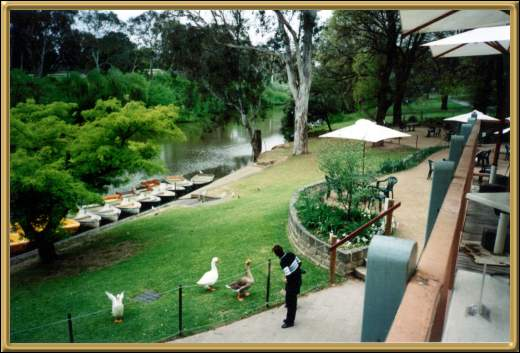

This was taken from Studley Park Boat House, which is a
lovely place to sit and eat, or hire a boat or canoe from. The Yarra flows right
through Melbourne and well out into the country of Victoria. We tend to refer to it
as the upside down river, mainly because of it's color - it's a very muddy brown.
But it's a very scenic river, and a great place for a Sunday afternoon picnic or stroll.
Photographer: Jean Stokes